| 2001年10月31日 | ||||||||||||||||||||||||||||||||||||
| 香港伺服器萬聖節活動
如果大家有檢查倉庫的話﹐都應該發現倉庫中多了一支變形魔杖(楓木魔杖)﹐這個魔杖可以把目標變為怪獸... 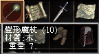 另外部分天堂工作人員亦變為一些未登場的新怪獸或首領﹐如巨蟻皇后﹐地龍等﹐見下圖﹕
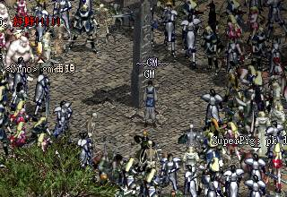 |
||||||||||||||||||||||||||||||||||||
| 2001年10月30日 | ||||||||||||||||||||||||||||||||||||
| 地龍及水龍正確打法
http://community.playforum.net:8080/bbs/prog/column?action=read&iid=10051003&kid=817 很多人都以為地龍及水龍要動員很多人去打﹐結果就算用了幾百人都不能將他們殺死﹐其實大家應該攻其弱點﹐就是不要用埋身攻擊﹐不要用自己去打﹐要去迷那些血多攻擊力大﹐攻擊範圍有2格的獨眼巨人﹐或是攻擊範圍較大的骷髏神箭手及長者。由於地龍及水龍沒有遠距離大範圍攻擊﹐因此他們不可能在短時間內將全部寵物殺死﹐加上NPC打NPC幾乎是必中的﹐而地龍及水龍只有六千餘HP﹐他們大約中300-400次擊就會死亡﹐所以只要有十數名法師去迷以上的寵物﹐加上復活卷軸﹐只要自己不要接近地龍及水龍﹐應該不難將他殺死。 |
||||||||||||||||||||||||||||||||||||
| 2001年10月29日 | ||||||||||||||||||||||||||||||||||||
| 香港天堂DNS伺服器更新
一向都不會怎樣更新的香港天堂官方網站今天突然出了一大堆公告﹐不用看都知道一定沒有好東西﹐原來香港天堂伺服器只是更新了DNS伺服器罷了﹐但可能因為準備不足﹐導致很多玩家不能連上香港伺服器﹐所以官方叫玩家更收捷徑﹐改了後又叫玩家改回原本的捷徑... 真掂不懂他們在幹甚麼﹐如果大家仍然連不上香港伺服器﹐請打電話到天堂客戶服務部﹕28936288 以下內容轉載自香港天堂官方網站﹕(我覺得NC人員應該好好學一下中文﹐最少都應該知道怎樣用標點符號...) 公告一 由於本公司對外ISP之網域名稱系統伺服器(DNS SERVER)出現異常,導致玩家目前無法連上太陽神阿波羅伺服器,待稍後10:00ISP將網域名稱系統伺服器(DNS SERVER)重新開機後,即可解決此問題,於10:00之前,玩家如想連上太陽神阿波羅伺服器,可致電本公司客服28936288詢問電腦桌面天堂捷徑修改方法. 公告二 請玩家注意,目前欲連上太陽神阿波羅伺服器之方法為: 公告三 目前無法連上太陽神阿波羅伺服器之相關問題已處理完畢,請玩家確定電腦桌面"天堂"捷徑為預設設定,才能進行遊戲更新,方法為: 官方發表 由於今天淩晨5:00~7:00對外連線ISP公司進行系統維護，之後因為部份設定未完成導致連線失敗，而造成玩家無法正常連上Lineage遊戲伺服器，本公司對此事件深感抱歉，敬請玩家見諒!! 有部份玩家，在桌面捷徑Lineage內容裡改掉/hongkong，以致可以連上Lineage遊戲伺服器，請務必再加回去，如果忘了加上去，未來會無法進行程式更新。請原來有拿掉/hongkong的玩家，務必加上/hongkong |
||||||||||||||||||||||||||||||||||||
| 2001年10月28日 | ||||||||||||||||||||||||||||||||||||
| 香港天堂萬聖節活動
消息來自香港天堂官方網站﹐在10月31日下年5時至11月1日凌晨1時在倉庫將會有萬聖節活動﹐名稱叫做萬聖節驚嚇夜﹐有關詳情官方並沒有公佈﹐可能是想給大家一個驚喜﹐不過本網覺得不外乎NC工作人員會將倉庫周圍的人變做怪物﹐或者派發糖果。 |
||||||||||||||||||||||||||||||||||||
| 2001年10月27日 | ||||||||||||||||||||||||||||||||||||
| 美國Lineage Launch Party
美國時間10月25日在Austin舉行了一個Lineage Launch Party﹐當中有UO之父Lord British及多名Online Game名人如Robert Garriot﹐Jake Song﹐Miyu﹐T.J. Kim等﹐有關照片可以參閱以下網頁﹕(轉載自Lineage Warcry) http://uo.warcry.com/images/ncsoft/index.html 台灣新增更多伺服器 轉載自台灣天堂官方網站﹕ 想一圓城主夢的玩家，11月7日將開放3組新的伺服器召集您的盟友一同投入這埸新的爭戰吧！ |
||||||||||||||||||||||||||||||||||||
| 2001年10月26日 | ||||||||||||||||||||||||||||||||||||
| 新道具介紹 - 四大屬性龍鱗片
相信只有相關屬性的龍才會掉﹐他們的用途主要是作為製造四大守護神的特別道具﹐如伊娃之盾。 地龍及水龍掉下物 消息來自PlayForum﹐似乎地龍和水龍會掉水晶盔甲﹐日本刀﹐復活魔法書﹐力量和智力項鏈﹐和相關屬性的龍鱗片﹐龍鱗片是製造該屬性守護神的特別道具的其中一種材料﹐暫知可以製造伊娃之盾(-3防﹐全職﹐+20HP﹐重50﹐裝備後自我加速)﹐有關圖片請參考有關網頁﹕ http://community.playforum.net:8080/bbs/prog/column?action=read&iid=10051003&kid=809 |
||||||||||||||||||||||||||||||||||||
| 2001年10月25日 | ||||||||||||||||||||||||||||||||||||
| 美國伺服器怪物下跌道具量大幅度上升
美國伺服器在改版後大部分怪物所跌下的道具量都大帳度上升﹐例如一隻狼人會跌90左右天幣﹐而且更有很大機會會跌長靴或銀釘皮甲﹗這些改變似乎是為了別吸納新玩家而去減低遊戲難度。另外黑暗法師及部分水之城的怪物亦會經常跌祝福的瞬間傳送卷軸﹐這對於沒有傳介的玩家有很大幫助。 天堂團體PK爭霸戰更多圖片 鳴謝守護者提供照片﹐似乎這像GM Fashion Show多過PK比賽 ^^ 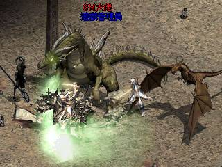
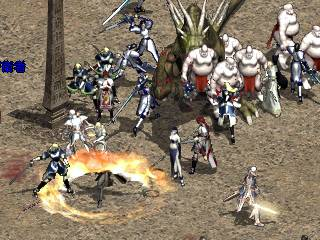 |
||||||||||||||||||||||||||||||||||||
| 2001年10月24日 | ||||||||||||||||||||||||||||||||||||
| Lineage正式進軍北美市場﹐美國官方網站大更新
在美國時間2001年10月23日﹐Lineage(橘子譯為天堂)正式重新進軍北美市場﹐並有水之城Heine的大型更新﹐對上一次是大約在1998年12月設立美國伺服器﹐但因為宣傳不足及當時遊戲未普及﹐故此玩家很少﹐結果因為收入不足﹐到最後美國伺服器要撤回韓國(位於韓國的美國伺服器﹗)... 久而久之淪為半測試伺器﹐大約到2000年年中伺服器正式結束﹐與此同時便有另一個美國伺服器﹐亦就是現在大家所看到的美國伺服器﹐好像俗稱63 Server。 另外美國官方網站 http://www.lineage-us.com 亦相應地進行大更新﹐當中的Online Manual -> Monsters (線上手冊 -> 怪物) 記載了很多怪物的新消息﹐除了有水之城的怪物外﹐很多現有的怪物都改變了HP, MP或AC﹐大家一定要看看﹗
|
||||||||||||||||||||||||||||||||||||
| 2001年10月23日 | ||||||||||||||||||||||||||||||||||||
| 香港團體PK爭霸戰 - 賽後更多花絮
鳴謝SkyHorseElf及xxyyzz提供圖片
美國伺服器的新消息 - 小型首領及反射之池NPC 除了黑暗妖精外﹐在美國伺服器的新手區域亦增加了不少新的小型首領﹐例如下圖像歐吉一樣的Cronos﹐當然實力沒有歐吉那麼強 ^^
另外在歌唱之島和隱藏之谷中﹐亦有新的NPC可以免費給新手觀看某些危險地方的畫面﹐就像用了反射之池魔法一樣(天眼通﹗)。
美國伺服器追加更新事項 詳情請看美國官方伺服器的報導﹕ |
||||||||||||||||||||||||||||||||||||
| 2001年10月22日 | ||||||||||||||||||||||||||||||||||||
| 香港天堂團體PK爭霸戰精釆照片！
鳴謝Jacky Mak提供照片 ^^
月族對DK... 阿波羅GM變身飛龍
GM們變身做地龍和巴風特！﹖
一次過見五個天堂工作人員...
GM地龍對GM地龍...
另有咋天肯特攻城照，場面很壯觀！ 新增怪物 黑暗法師 和 霧化效果 以下內容轉載自Lineage Compendium，這是一個非常出色的天堂網站（本網站可不會隨便推介網站^^），該站網主經常會自己製作和搜尋天堂的最新消息，不像某些網站般只會轉載其他網站的消息。 黑暗法師(Dark Mage)在美國的測試伺服器出現在歌唱之島，他的實力不太強，但對於等級10以下的新手來說可能有點難，他的魔法攻擊大約每下扣6-12HP，死後會掉祝福的瞬間移動卷軸（可以在書籤中選擇要去的地方）和大約35-65天幣。
另外該伺服器亦測試了新增的霧化效果，見下圖：
|
||||||||||||||||||||||||||||||||||||
| 2001年10月21日 | ||||||||||||||||||||||||||||||||||||
| 香港天堂團體PK爭霸戰有結果了！ 香港天堂團體PK爭霸戰有結果了，冠軍得主是月族，血盟成員分別是：王族：月之使命， http://www.lineage.com.hk/lineage/lineage_ploy.asp PS: 由於網主身在科技很落後的英國，星期日找不到地方上網看賽事 ><，如果你有一些很精釆的照片，歡迎電郵到 brielhk@sinaman.com 和大家分享^^。 美國伺服器十月二十三日大更新！ 有關更新詳情請參考美國天堂官方網站報導，另外他們亦會有一連串的宣傳活動呢！ |
||||||||||||||||||||||||||||||||||||
| 2001年10月20日 | ||||||||||||||||||||||||||||||||||||
| 香港天堂團體PK大賽！
今天在香港天堂伺服器終於開始了第一場的團體PK比賽，由無限盟對特特家族，有關花絮如下（唉，真想把比賽用TV-Out錄下來）：
比賽開始前，兩方嚴陣以待，圖中的兩位死亡騎士就是比賽裁判。
大家都在龍卷風中互斬．．．
裁判也要喝綠水．．． 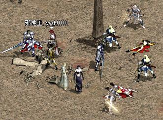 勝負已分～ NCSoft內部地圖草稿 - 大陸(Mainland)
這張地圖大約是在龍谷推出前所設計的，真不明白為甚麼他們要以十六進制8000(十進制32768)那麼大的數值來做中心座標... 圖中可見有兩處空地，肯特右邊的就是奇岩，而銀騎士之村右邊的就是Heine。 |
||||||||||||||||||||||||||||||||||||
| 2001年10月19日 | ||||||||||||||||||||||||||||||||||||
| 台灣伺服器11月7日推出水之都
台灣伺服器將會於11月7日推出水之都，即是大家所俗稱的水城，而且之前更有一連串的活動，有關詳情請參閱台灣官方網站： http://www.lineage.com.tw 台灣已經比韓國和日本遲了差不多兩個月才更新，聽聞香港要等台灣方面除蟲後才會更新，難道香港天堂活動表中的"神秘登場"就是指更新水之都！﹖ |
||||||||||||||||||||||||||||||||||||
| 2001年10月18日 | ||||||||||||||||||||||||||||||||||||
| NCSoft內部地圖草稿 - 說話之島(Talking
Island)
最近無意中得到了NCSoft內部的地圖草稿，看起來真有點兒像小學生在數學簿上畫公仔，大家請看看： 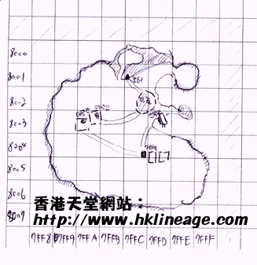 今天先放上說話之島的，明天會放上大陸。 |
||||||||||||||||||||||||||||||||||||
| 2001年10月17日 | ||||||||||||||||||||||||||||||||||||
| 新道具介紹 -
四屬性（水、地、火、風）金屬盔甲
本網相信在不久的將來（十年內...）遊戲中將會加入屬性系統，屆時除了金屬盔甲外，更會有一系列的附有屬性的裝備。 期待以久，香港伺服器終於更新了！ 如果大家用舊天堂用戶端連接香港天堂伺服器，盼望以久的檔案更新程序終於出現了！今次的更新最重要就是在創立角色時不用再擲骰子，可以自選能力值，另外當然還有很多改變，例如晚上在洞穴外變得更光亮，攻城守則少許改變，升級時有一度光，新開的妖精角色有地圖，加了的瑪那魔杖可以偷更多魔力等等... 另外韓國測試伺服器亦有數個檔案更新，主要是再進一步最佳化新介面。 |
||||||||||||||||||||||||||||||||||||
| 2001年10月16日 | ||||||||||||||||||||||||||||||||||||
| 新道具介紹 -
四元素（水、地、火、風）萬能藥
水之萬能藥 以上就是四大元素萬能藥，本網估計用途不外乎三方面：一是用在武器或防具之上，使其增加某元素的屬性，例如將水之萬能藥用在武器上後，攻擊會變為水屬性，對火屬性的敵人有加成；如果用在防具上，則可以增加自己對該屬性的扺抗力；而第二用途就是作為製造武器或防具的原料，水之萬能藥可以用來製作水系的裝備，如水元素金屬盔甲，甚至可能可以製作水神伊娃系列的裝備！而第三就是用在自己身上，可以暫時或永久增加對該屬性的抵抗力。 \f1%0感覺到火熱的力量。 以上純粹是本網猜測，但根據歷史（請看一看Lineage Info）本網的猜測是很準確的。 |
||||||||||||||||||||||||||||||||||||
| 2001年10月15日 | ||||||||||||||||||||||||||||||||||||
| 新道具介紹 - 指定傳送卷軸 (村莊/奇岩/歌唱之島/隱藏之谷) 本網將會於本星期介紹一系列的天堂新道具，當然不是鋼鐵防具或魔法師防具那些通天曉的資料，大部分都是其他網站沒有提及的，可以算是獨家資料。 今天要介紹的就是： 指定傳送卷軸(村莊/奇岩/歌唱之島/隱藏之谷) 指定傳送卷軸可以直接傳送到指定的地方，例如你是有城或盟屋的盟友，如困你使用傳送回家的卷軸是會傳送返城堡或盟屋的，如果城堡或盟屋距離目的地太遠的話是會造成很大麻煩，但是使用指定傳送卷軸(村莊)則會傳送地最接近的村莊，不用浪費時間由城堡或盟屋再行去目的地打怪。 另外指定傳送卷軸(奇岩)則可以由任何地方傳送到奇岩，而歌唱之島/隱藏之谷亦相類似，但等級10或以上的玩家在歌唱之島/隱藏之谷是會被傳走的。 |
||||||||||||||||||||||||||||||||||||
| 2001年10月14日 | ||||||||||||||||||||||||||||||||||||
| 香港天堂官方活動表
轉載自香港天堂官方網站： http://www.lineage.com.hk/lineage/lin_image/act_page/coming.htm 團體PK爭霸賽、新手玩家訓練營、盟友同樂會、線上冒險奪寶活動、怪獸生死格鬥賽、攻城戰…… 哈哈哈… 這麼多的活動，您有膽量來接受挑戰嗎？ 詳細報名的方法及活動內容介紹， 請密切注意本網站及遊戲內的最新活動報導。
客戶服務熱線：2893-6288 |
||||||||||||||||||||||||||||||||||||
| 2001年10月13日 | ||||||||||||||||||||||||||||||||||||
| 韓國測試伺服器小更新
昨天又有新的檔案，當我們進入一些的遮蔽的地方（如屋內）時，遮蔽物會漸漸變為透明。 另外在最新的物品描述檔中，本網之前提到的Staff of Life變為Sword of Life（生命之劍）了。 |
||||||||||||||||||||||||||||||||||||
| 2001年10月12日 | ||||||||||||||||||||||||||||||||||||
| 天堂團體PK比賽改期了
可能因為太少人報名的關係，現在報名日期將會加長至十月十七日，而比賽日期亦會順延，有關詳情請參閱最新的官方公佈： |
||||||||||||||||||||||||||||||||||||
| 2001年10月11日 | ||||||||||||||||||||||||||||||||||||
| 測試伺服器自選能力值新資料 相信大家都知道在新的天堂版本中可以自選能力值，不用再浪費時間去擲骰子，而當中以法師的能力值可選範圍最廣，但在最近的測試伺服器更新中，法師的剩餘點數由30點減為16點，體質、精神和智力的最少值由7/8改為12，因此在未來可能不能再選16/18魅力18精神18體質的高HPMP召喚型法師，或者 20力量14敏捷18體質的騎士型法師……
天堂新手訓練營 等級1至5的玩家有福了！香港天堂官方舉辨了一個新手訓練營，目的是為了幫助大家更容易對天堂遊戲上手，有關詳情請看： |
||||||||||||||||||||||||||||||||||||
| 2001年10月10日 | ||||||||||||||||||||||||||||||||||||
| 韓國測試伺服器再次更新
韓國測試伺服器大約有900餘個更新檔，主要是再一步最佳化新的介面，現在如果我們將滑鼠放在某些位置數秒，將會有浮動提示。另外亦修正了不少問題，例如用F10快速鍵可以快速使用道具等。
連接韓國測試伺服器下載更新檔方法 Right Click天堂的捷徑，然後選內容，並將/hongkong改為/test，如下圖：
之後按確定，其後在執行天堂時，便會連接韓國測試伺服器下載更新檔，下載完後，將/test改回/hongkong，便能在香港伺服器用新的介面。 |
||||||||||||||||||||||||||||||||||||
| 2001年10月9日 | ||||||||||||||||||||||||||||||||||||
| 香港天堂活動 - 天堂團體PK爭霸戰！ 以下內容轉載自香港天堂官方網站：(唉...網主身在英國，應該不能玩) http://www.lineage.com.hk/lineage/events/pk/scroll1.htm 活動名稱： 天堂團體PK爭霸戰活動日期： 2001年10月13日(初賽)、14日(複賽)、15日(決賽)。 (初賽)共16場、(複賽)共12場、(決賽)共3場 每場次PK時間以20分鐘為限，可視現況而定或延長賽程。 報名日期： 2001年10月10 ~ 11日 參加資格： 參賽隊伍以8人為一隊﹝王族1名、騎士3名、妖精2名、法師2名﹞，而所有隊員必須為同一血盟成員。每個天堂帳號只能報名一次。 報名方式 1. 參加隊伍由王族代表報名，將 ：個人姓名、聯絡E-mail、聯絡電話、天堂遊戲帳號名稱、血盟名稱與及8名隊員之角色名稱、職業及等級，電郵到event@ncgamania.com.hk 報名即可。 2. 團體PK爭霸戰之名額為32隊。若報名數目超出32隊，則以抽籤形式抽出32隊參加隊伍及5隊後補隊伍。 3. 參賽及後補名單將於2001年10月12日於本網站公報。 賽程時間 初賽 10月13日(六) 複賽/準決賽 10月14日(日) 決賽/總決賽 10月15日(一) 12:20-12:40 第1場 13:00-13:20 第2場 第1場 13:40-14:00 第3場 第2場 14:20-14:40 第4場 第3場 15:00-15:20 第5場 第4場 15:40-16:00 第6場 第5場 16:20-16:40 第7場 第6場 17:00-17:20 第8場 第7場 17:40-18:00 第9場 第8場 18:20-18:40 第10場 19:00-19:20 第11場 19:40-20:00 第12場 準決賽1場 決賽1場 20:20-20:40 第13場 準決賽2場 決賽2場 21:00-21:20 第14場 準決賽3場 21:40-22:00 第15場 準決賽4場 22:20-22:40 第16場 總決賽 總冠軍獎項： 祝福的對武器施法的卷軸 - 4卷 祝福的對盔甲施法的卷軸 - 4卷 血盟徽號、血盟名稱及勝出隊伍之隊員名稱，可以榮登在lineage網站上的『天堂團體PK霸主』 |
||||||||||||||||||||||||||||||||||||
| 2001月10月8日 | ||||||||||||||||||||||||||||||||||||
| 香港天堂公佈了中秋節活動得獎名單
可能是舊消息，詳情請看有關網頁： http://www.lineage.com.hk/lineage/events/moonresult/luckymoon.htm 真想不到那麼少人可以順利完成活動... |
||||||||||||||||||||||||||||||||||||
| 2001年10月7日 | ||||||||||||||||||||||||||||||||||||
| 地圖區域大致完成
本網的地圖區域大致完成，新增了超過一百張不同區域的地圖，大部分地圖都是由其他網站轉載過來的，在此要多謝製造地圖的玩家！ 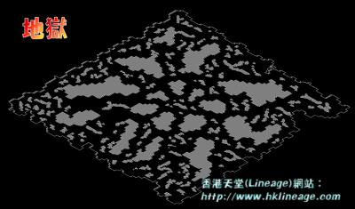 |
||||||||||||||||||||||||||||||||||||
| 2001年10月6日 | ||||||||||||||||||||||||||||||||||||
| 帳號被盜，NC Gamania說不處理？消費者應有自己的權益！
如果大家有留意台灣和香港的官方天堂網站，他們都說不再處理有關帳號被盜的問題，這是否意味著玩家帳號被人非法盜用後便無計可施？不！我們是消費者，我們附得起錢（和時間）去玩遊戲，就應該有消費者的權益，大家可以參考以下在台灣方面，因帳號被盜用而要用法律途徑去解決的資料： 台灣民視監察怨 - 天堂帳號被盜特輯： http://www.hklineage.com/010928J.zip 天堂刑事告訴狀： http://www.hklineage.com/linlaws.zip 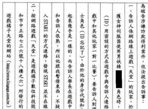 總言而知，如果我們的帳號被盜用，我們必須不要怕麻煩，要即時向NC Gamania會報並提供詳細準確的資料，另外我們不要怕事，在必要時要用法律的途徑去解決，否則只會助長盜用帳號的風氣。 |
||||||||||||||||||||||||||||||||||||
| 2001年10月5日 | ||||||||||||||||||||||||||||||||||||
| 美國新大型Lineage網站
美國那面剛有一個新的大型Lineage網站成立，名稱是Lineage Warcry，內裡有很多美國測試伺服器的消息，大家不能錯過喔！ Lineage Warcry: http://lineage.warcry.com/
|
||||||||||||||||||||||||||||||||||||
| 2001年10月4日 | ||||||||||||||||||||||||||||||||||||
| 韓國伺服器第一個等級50王子
韓載自PlayForum： http://community.playforum.net:8080/bbs/prog/column?action=read&iid=10051003&kid=750 韓國歷史最悠久的Depardieu伺服器Dragon Knights血盟（最強血盟之一）的王子已經Lv50了！可以變身做巴風特！ 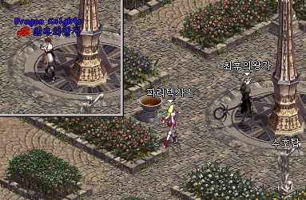 |
||||||||||||||||||||||||||||||||||||
| 2001年10月3日 | ||||||||||||||||||||||||||||||||||||
| 美國伺服器公怖了水城更新的詳情
美國伺服器將會於十月二十三日進行大型的水城更新，究竟香港和台灣伺時才有呢？以下更新的內容翻譯自美國伺服器官方網站的公告： 水神夏娃的國度： |
||||||||||||||||||||||||||||||||||||
| 2001年10月2日 | ||||||||||||||||||||||||||||||||||||
| 水城Heine及水龍動畫片段！
此動畫是由韓國最強Lineage討論區PlayForum作製作，本網已經將動畫下載並放在香港伺服器上，大家一定要看喔！ http://www.hklineage.com/fafurion.zip （約24MB） 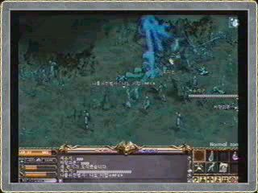 PS: 片段中的騎士竟然能放地裂！？另外水龍的攻擊模式比地龍更強，它有大範圍及遠距離的冰雪暴魔法攻擊！ |
||||||||||||||||||||||||||||||||||||
| 2001年10月1日 | ||||||||||||||||||||||||||||||||||||
| 中秋節活動道具 - 幸運餅乾
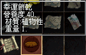 幸運餅乾可以在妖魔、哥布林、骷髏、楊果里恩及亞力安上取得，收集20個後，可以在10月2日早上11:30維修後變成10,000天幣！如果將幸運餅乾吃下，就如吃其他食物一樣會加飽食度，沒有甚麼特別。 |


 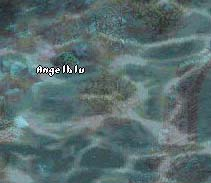
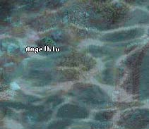


{kind=link}
{kind=link}
{kind=link}